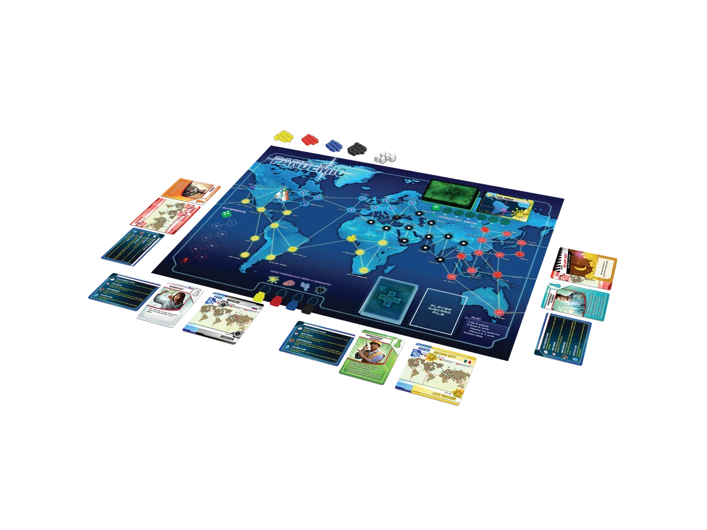
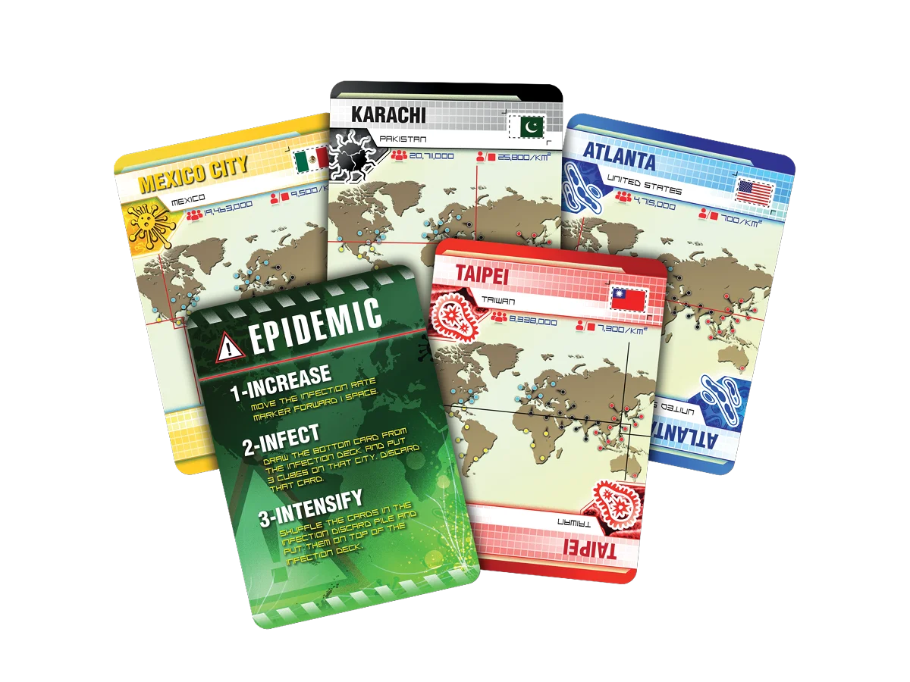
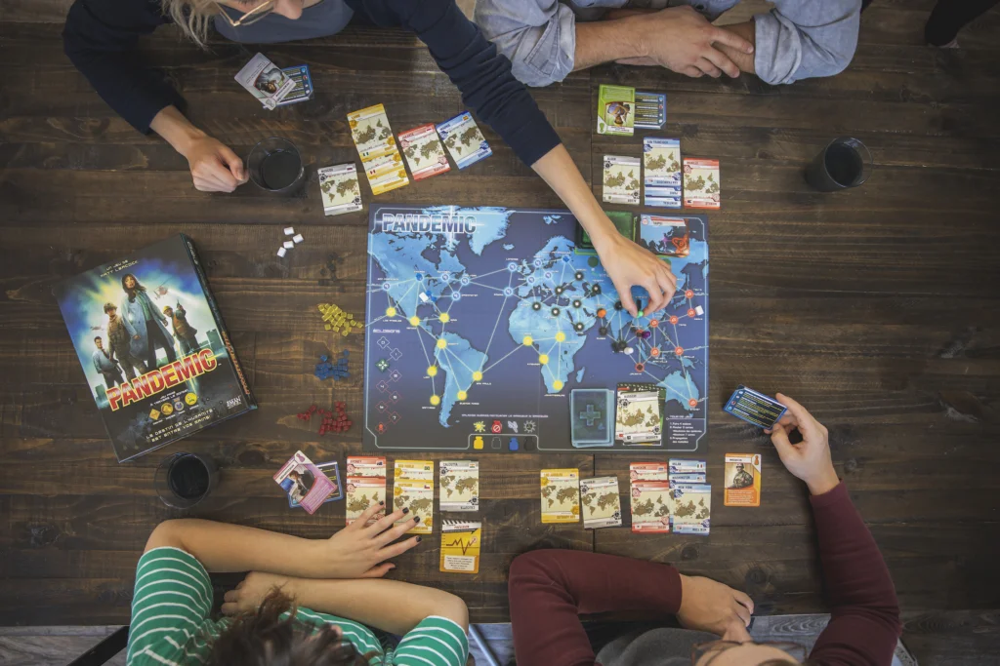

Pandemic:
A Public Arithmetic Problem Dressed as Disaster
1. When the Cure Becomes a Checklist
Pandemic is one of the most recognizable modern cooperative board games. Players act as specialists moving across a world map, treating disease cubes, sharing city cards, building research stations, and trying to discover cures before outbreaks and the player deck run out. Even if someone has never played it, the appeal is easy to understand: everyone is on the same side, the threat is visible, and the table gets a clear story of trying to stop a global disaster.
That is why it would be wrong to treat it as a failed design. Its influence comes from real strengths. But those strengths also make it a useful case study: a cooperative game whose formula becomes visible very quickly. This deconstruction is less a rejection of its place in board game history than an attempt to locate the point where readability turns into a ceiling.
The design problem is not simply that Pandemic feels like a puzzle. Puzzle-like play can be satisfying when deeper understanding opens new options, priorities, or forms of mastery. The problem appears when a game becomes formulaic too quickly: once the table reaches the basic threshold of play, the system stops opening new space and mostly asks players to execute the same logic more carefully.
Pandemic gave me that feeling early. The game has dramatic packaging: a world map, disease outbreaks, cities collapsing under cubes, research stations, cures, and a shared loss condition. But once the first layer became familiar, the disaster started to look like a public arithmetic problem.
1.1 The Problem Is Not That It Is a Puzzle
This distinction matters because "it feels like doing a problem" is not automatically a criticism. Many good board games are, in some sense, problems. The pleasure comes from finding structure, recognizing patterns, and making a constrained system produce a better result than it first seemed to allow.
What I do not enjoy is a problem that shows its ceiling too soon. A good puzzle game can still surprise me after I understand its rules. It can reveal new tensions, hidden priorities, or different styles of mastery. A formulaic game, by contrast, reaches a point where understanding the method feels almost the same as exhausting the game.
1.2 Once the Trick Is Visible
Pandemic has a threshold like that for me. Once the table understands a few principles, the game becomes much less mysterious: do not ignore three-cube cities, watch the infection discard pile after epidemics, concentrate same-colored cards, avoid wasting city cards, protect the cure plan, and spend actions efficiently.
These are not trivial decisions, but they are also not an endlessly expanding strategic landscape. After the threshold is crossed, many turns feel less like invention and more like applying the known grammar: count movement, compare urgent fires, preserve the route toward a cure, and accept the least damaging compromise.
1.3 Nowhere Else to Climb
That is where the game loses me. It is not that every move is obvious. It is that the space of meaningful discovery feels limited. Even if I play better, I do not feel that I am discovering a new kind of play. I feel that I am becoming more efficient at a pattern that has already announced itself.
For a game with a low threshold and a visible ceiling, the lifespan becomes short. It may still produce tension, and it may still produce close endings for some groups, but the personal process of exploring the upper limit is thin. I do not get much time to ask: what else can this system become?
This is a problem I often have with puzzle-like games when they become too formulaic. A better understanding of the system should ideally open new play space: sharper priorities, stranger tradeoffs, more expressive lines, or at least a richer sense of mastery. In Pandemic, my experience is almost the opposite. Understanding the system more clearly removes part of the drama without giving me enough new depth in return.

2. The Moment Everyone Can See the Answer
The thinness comes from several connected choices. The game is highly public, highly readable, and strongly goal-directed. Those choices make it approachable, but they also make it easier for the table to turn the game into shared calculation. In other words, the same openness that makes the game teachable also makes the answer feel unusually exposed.
2.1 My Turn, Our Calculation
A player's turn formally belongs to that player, but in practice it often becomes something the table computes together. The question is not always "What kind of decision do I want to make?" but "What is the correct use of these four actions?" The discussion narrows into step counting, card comparison, cube control, and cure timing.
This can be pleasant, especially for new players. It gives the table a clear common task. But it can also make the cooperation feel procedural. The group is not exploring several personal approaches; it is trying to identify a reasonably correct line through a public state space.
2.2 When One Player Becomes the Table
This is why the quarterback problem appears so naturally. If most important information is public, a more experienced or more assertive player can start directing the table: go there, do not treat that city, save this card, give that card next turn.
Other players are not irrelevant, but they can become executors of a plan rather than owners of their turns. The game still says "cooperative," but the cooperation has shifted from shared decision-making to centralized optimization. Everyone is helping, but not everyone is equally playing.
2.3 Cities Turn Back into Nodes
The theme also becomes functional over time. The world map gives the game immediate presence, and the disease colors are clear. But the mechanisms do not always sustain the illusion.
A city becomes a risk node. A disease becomes a pressure marker. A cure becomes a card threshold. Again, this is not a failure of abstraction by itself. All board games need abstraction. The issue is that Pandemic abstracts so cleanly that the theme can become a label on a very readable optimization problem.
3. Why This Formula Spread
After thinking about that frustration, the more interesting question is why Pandemic became so successful anyway. The answer is not that the formulaic quality disappears. It does not. The answer is that the same qualities that limit its long-term depth also make it a very strong entry point for cooperative board games.
3.1 Everyone Against the Board
Pandemic made a specific cooperative structure feel clean and teachable. Players are not attacking each other. They are not negotiating hidden agendas. They are facing a system together, with a shared loss condition and a shared emotional frame. For many groups, especially groups entering modern board games through lighter or medium-weight titles, that was important.
Its innovation is not that every decision is deep. Its innovation is that "everyone against the system" becomes immediately legible. Four actions, visible outbreaks, recurring infection risk, limited hand management, and shared cures: these elements form a cooperative grammar that later games could inherit, modify, or argue with.
3.2 A Board That Teaches You Where to Look
This readability is probably its strongest design quality. If a city has three cubes, it is dangerous. If someone has four cards of one color, that player becomes important. If an epidemic appears, old trouble may return soon. The game tells players where to look without making them learn a dense icon language.
That makes it easy to teach and easy to discuss. It can say: we are a team, the world is sick, and we need to solve this together. That sentence is simple, but it is effective. It gives the table a reason to care before the system becomes abstract.

3.3 When the Crisis Is Too Easy to Solve
Another reason the game can work for many groups is that it promises a feeling of shared panic. A city is at three cubes. An epidemic appears. The discard pile is shuffled back on top. Everyone knows the danger is coming back, but not exactly when. I can understand why that structure is supposed to work.
My actual experience, however, is not that the game reliably reaches the tension it seems designed to promise. In the basic game, it often feels too solvable too quickly. The table identifies the dangerous cities, pushes cards toward cures, manages the obvious fires, and wins without the crisis becoming frightening enough to overcome the formulaic feeling.
This may vary a lot by group, difficulty, and experience level. A newer table may genuinely feel squeezed. A table that plays more openly, discusses less efficiently, or uses a harder setup may have a different emotional arc. But for me, the promised panic does not consistently arrive. Once epidemics read as discard-pile recycling and outbreaks read as a pressure track, the disaster becomes manageable before it becomes dramatic.
4. A Good Textbook Is Still a Textbook
This is why my judgment is split. Pandemic is a successful cooperative design, and its success does not erase the weakness I feel. The two things coexist. It can be an important game and still be a game whose formula becomes visible too quickly for me.
4.1 The Perfect First Disaster
It satisfies many basic tabletop needs very well. Players do not have to attack each other. The rules are not especially heavy. The theme is immediately understandable. The game can create a complete crisis arc in about an evening. It gives groups a common enemy and a simple emotional frame: we are trying to save the world.
That is powerful. It lowers the social barrier of board gaming. It lets a table experience tension without direct conflict. It can give losing a narrative excuse and winning a sense of shared relief. For many groups, that promise is exactly enough.

4.2 The World, or the Worksheet?
For me, though, Pandemic feels more like a textbook than a game I want to revisit often. A textbook can be valuable. It can be clear, influential, and necessary. It can teach a whole generation of players what cooperative board gaming looks like. But textbook value and lasting fascination are not the same thing.
It teaches players how to face a system together, yet it does not fully solve the hardest cooperative question: how can everyone share one goal while still keeping their own judgment, rhythm, and personality? Once the formula appears, the game has less space for that kind of personal play.
The question is not whether Pandemic works. It clearly works. The question is how long the formula remains interesting after it becomes visible.
For many people, the answer is: long enough. The crisis is clear, the tension is shared, and the puzzle is exactly the right size. For me, the puzzle becomes visible too early. I can respect the design and still feel that, after reaching its threshold, I am filling in a beautifully themed application problem more than discovering a world still capable of surprising me.